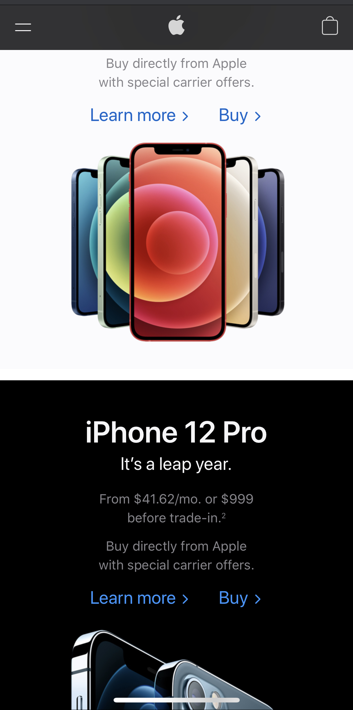

Rule of Thirds
Organization: Gymshark
Gymshark's WebsiteMobile Screenshot:
How It's Exemplified:
For mobile view, I think it's hard to divide a small screen into 3 equal columns and keep the content large enough for viewers to see. Rows however, is a lot more doable. Although this screenshot is not exact thirds horizontally, There are 3 main sections that I see: The header area, the image (no text overlay), and the text (overlaying the image).
Contrast
Organization: Apple
Apple's WebsiteMobile Screenshot:
How It's Exemplified:
I scrolled down just a touch to show more of the black/white contrast. The concept of contrast should be very evident here: black and grey text on white background, white and grey text on black background. all of their product images contrast well against the background.
White Space/Clean Design
Organization: Mint Mobile
Mint Mobile's WebsiteMobile Screenshot:
How It's Exemplified:
While it's not literal "whitespace", we can see plenty of "greenspace" clear of any clutter and distractions. The design of this homepage is very simple and clean.